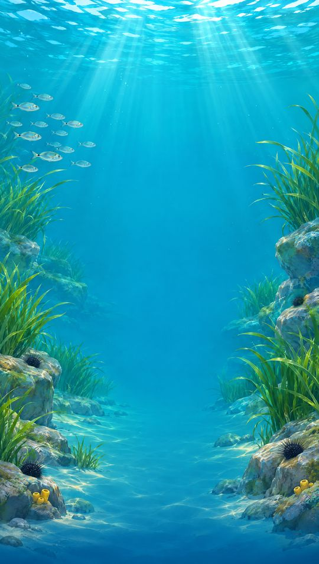
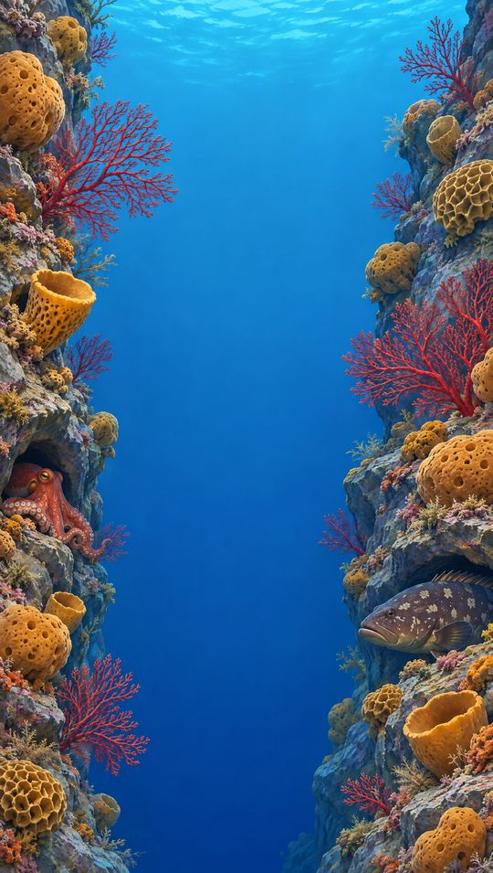
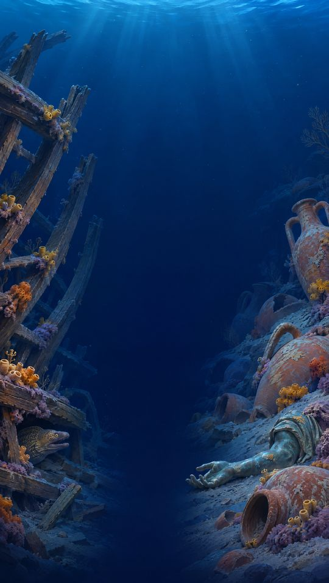
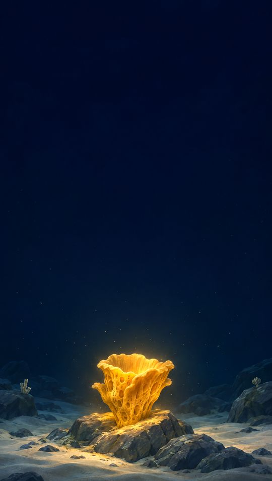
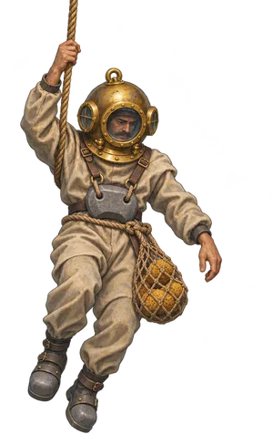
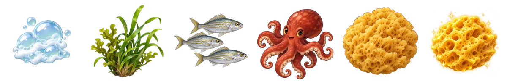
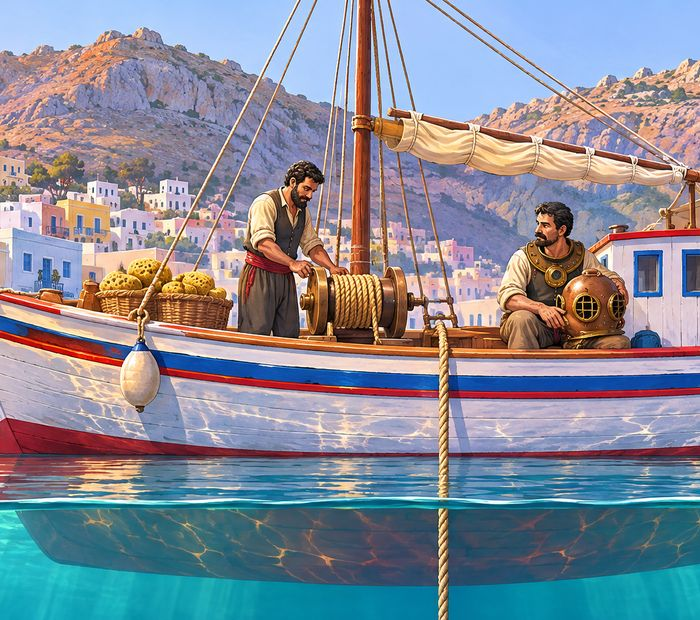

Name the thing nobody else thought of.
Every day there are seven prompts, the same for everyone: «Πες κάτι που ανακινείς πριν το χρησιμοποιήσεις», «Πες ένα βιντεοπαιχνίδι που παίζεται στο Switch», «Πες μια λέξη που κρύβει ένα νησί». You type one answer. If it fits and few people said it, your diver goes deeper, from the seagrass past the sponge-covered rocks and an ancient wreck down to 70 metres.
It accepts Greek, English and Greeklish, ignores accents, and forgives η, ι, υ, ει, οι and double letters. If it isn't sure what you meant, it asks «Εννοείς…;» before it counts.
- 7prompts a day, the same for everyone
- 50″to type each answer
- 10 εκof depth for every point
- 700points is a perfect dive: 70 metres
Six tiers, from the foam to the seabed
Each prompt has a full list of valid answers, often thousands, built from a knowledge graph of more than 360,000 things: films, games, series, actors, animals, countries, Greek words. Famous answers float. The rest go deep, and one hand-picked answer per prompt is worth the most.
Αυτό το είπε όλη η Κάλυμνος.
Φύκια για μεταξωτές κορδέλες: το σκέφτηκαν κι άλλοι.
Κολυμπάς με το κοπάδι.
Κρυμμένο στα βράχια. Ωραίο.
Λίγοι κατεβαίνουν τόσο βαθιά.
Ένα στα μύρια!
Πες μια ταινία με αριθμό στον τίτλο
1,875 answers · from «300» to «Fahrenheit 9/11»Πες κάποιον που έχει παίξει σε ταινία της Marvel
547 answers · Ζεντέγια floats, Ντάνι Πούντι sinksΠες μια λέξη που κρύβει ένα ελληνικό νησί
526 answers · «κουμπάρος» hides Πάρος, «προδοσία» hides ΡόδοςDown a rope from a kaiki in Pothia
Every answer is a dive from a kaiki in Pothia harbour, Kalymnos. The timer is a held breath. The shallows are seagrass and shoals of picarel, then rock walls covered in sponges, then an ancient wreck like the one Symi sponge divers found off Antikythera in 1900. At 70 metres lies the rarest sponge of all: the Σφουγγαρομύριο, one in ten thousand («ένα στα μύρια»).
At the end your seven answers hang from the mast as a string of sponges, small and pale for the obvious ones, golden for the deep ones.






Every answer brings something up, and during the dive each one waits at the depth it would take you to.
Your catch, the curve, and what everyone else said

After the seventh prompt you see your depth, where you landed among today's players, and every round's full answer list: which answers floated, which sank, and the one gem with its story.
One dive a day, the same for everyone, so you can compare with friends. Copy your result as a row of emoji and send it.